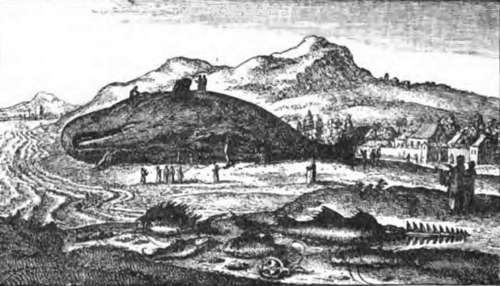
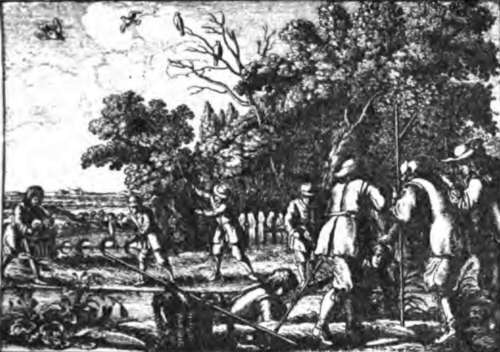

Tarpon And Other Big Fishes Of Florida. Part 4
Description
This section is from the book "Fishing", by Horace G. Hutchinson. Also available from Amazon: Fishing.
Tarpon And Other Big Fishes Of Florida. Part 4
Among them is a 17-feet hammer-head upon which the harpooner has had his eye for some time, and after which he now proceeds; straight towards the boat comes the hammer-head, his huge proportions denoting an unusually fine specimen, but he comes straight on, not noticing the boat, and passes away astern. The harpooner had not dared to strike him head on, and lost his chance for ever. Soon a common shark is seen and successfully approached. The harpoon and part of the shaft is buried in his side, he lashes the water with rage and seizes the shaft between his formidable teeth, breaking it short off; he cuts the rope clean in two at the same time, and escapes with a bran-new harpoon in his flesh, which probably causes him no more inconvenience than would a sucker.
A fresh harpoon is quickly fixed, and the hunt continues; in half-an-hour the man in the bow cries, "look out," and down goes the harpoon, straight into the dark water below the boat; he has seen as they passed over it the pale outline of a sawfish resting on the bottom, and has struck it fair; an up and down shot being an easy one in .harpooning. The guide pulls away hard, for he guesses what the fish must be, and desires to clear off a bit before it has discovered what has struck it, for on finding itself thus interfered with, and seeing a boat above, it is liable to show fight, in which case the boat would come off second best. The sawfish plays craftily, never running more than about fifty yards, and then pulling up suddenly in an apparent attempt to entice the boat within reach of his dangerous saw, with which in his fury he is prepared to slash around him to the serious detriment of anything it may encounter. The sawfish is sluggish in the extreme, and except when on the offensive, can be hauled about at leisure. With some difficulty standing room is obtained among the oysters clustering among the mangrove suckers at the margin of a lagoon, and here the fish of 15 feet is hauled ashore and deprived of his saw. An exciting chase after a school of porpoises next occupies half-an-hour of hard rowing, but after plunging over an almost dry sandbank they finally escape into deep water. Porpoises are very difficult to approach in a small boat, and if harpooned in deep water, could seldom be killed. In these parts, however, the sea is all shallow, and with the rope once checked even their enormous strength would finally give out. So great is their first rush when pricked in very shallow water that the chances are the entire coil of rope disappears before the harpooner can get a hold on it; and being necessarily unfastened at the end it might all be lost, consequently these animals are usually left to sport in peace on the surface of the water or to leap high in mid-air as is their custom.
While coasting up a lagoon the harpooner has the luck to catch a big tarpon at such an angle that the harpoon enters beneath a scale and the fish is held fast; an unusual occurrence, for as a rule the armour is so strong as to resist a square shot. As soon as the tarpon feels the iron he sets to work with mighty jumps as though hooked on a rod, but the weight of rope quickly tires him out. Of sting rays, which do not run over 200 lbs., there are plenty, but they are too insignificant for notice, and entail too much bother to release from the harpoon, while avoiding their dangerous darts, to offer any encouragement.
An alligator may sometimes be encountered upon these expeditions, but the skin-hunters have almost exterminated them. In 1902 one of 13 feet was secured by a tarpon fisher, and this was probably the last big one left in the locality. There are still crocodiles in the interior, but they too are becoming scarce. The only other reptiles sought by the harpooner are turtles; of these the loggerhead is very plentiful, and weighs up to two or three hundred pounds. For taking turtles, a fine line and small dart harpoon is used; the turtle must be approached swiftly and silently from behind as he lies basking on the water. When struck he is played gently by hand for twenty minutes until he is forced to rise for air; then a second harpoon is thrown, and he is secured. These loggerheads are only fit food for the " spongers," and the bastard turtle is not much better, while the green ones, as becomes things really good, are very scarce and shy, and are only likely to be obtained when seen at the bottom of the sea.
There is not a great deal of bird life in this portion of Florida, and what there is, is being greatly reduced by those ladies who cannot refrain from causing wanton slaughter in order to display an osprey plume or some such coveted treasure on their hat. If the misery they cause could but be brought home to them, even the vainest would show some pity, and possibly refrain from purchase ing trophies to obtain which a whole nestful of little fledglings has been left to starve.
It is quaint to see such birds as pelicans and cormorants nesting in tree tops, supporting their great webbed feet on tiny twigs, but there are no rocks nor any place upon the ground free from the pilfering hands of the racoons; hence the trees of small islands from which coons are absent are chosen, and here large colonies of birds congregate together for their joint protection.
Sportsmen will be interested to learn that the nucleus of a society was founded in May 1903 by a few leading tarpon fishers at Useppa Inn, having for its object a more sportsmanlike method of taking tarpon with rod and line.
Rods and lines are to be considerably reduced in size, fish officially weighed, membership honourably earned by skill, and tarpon fishing saved from degradation to which clothes-lines and punt-poles are rapidly dragging it.
It is indeed well that so noble a fighter as the tarpon should no longer be done to death by brute force. The association is to be congratulated upon its princely effort.
A Whale

Continue to:
- prev: Tarpon And Other Big Fishes Of Florida. Part 3
- Table of Contents
- next: Chapter III. The Mahseer And The Bola